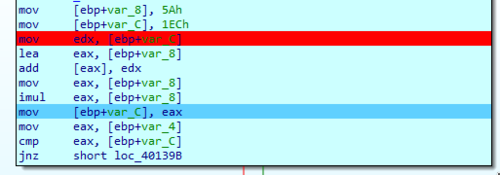
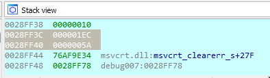
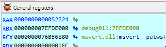

I am continuing my reverse engineering review by tackling the IOLI crackmes by @pof. These are beginner friendly challenges that is perfect for newbies or for those who want to review the basics like me. Check out my writeups for 0x00 and 0x01.
Getting the password
After the first two challenges I kinda know what to expect already so I skipped running the program and immediately loaded it in IDA.

So the lines leading to the comparison command now looks more complicated than before. We could easily see that there are some computations that happens thanks to the presence of add and imul. Before those, we have two values (5Ah and 1ECh) which we can easily guess are the values that will be worked on by these arithmetic functions.
So going through the lines sequentially we can see that the two numbers are first added with add [eax], edx. Which results in a value of 246h.
After that we see the line imul eax, [ebp+var_8], which if you follow the sequence closely effectively multiplies 246h by itself, resulting in a value of 52B24h.
Convert 52B24h to decimal equates to 338724, which is unsprisingly the password that we need.

Confirming via dynamic analysis
What we did above is that we used static analysis to inspect the program line by line to determine the final computed password value. Let's use dynamic analysis and step through the code to see how our data is manipulated in memory during this process.
Let's set a breakpoint immediately after the initial two values are loaded into memory.

If we look at the memory locations we would see the following:

epb+var_8 points to 28FF40 which now contains 5Ah
ebp+var_C points to 28FF3C which now contains 1ECh
Stepping through the code and checking the memory location after add [eax], edx shows that the result 246h is saved at memory location 28FF40.

Then after imul eax, [ebp+var_8] we see that eax now holds the value of 52B24h, confirming the final computed value that we had from our static analysis.

Patching the executables
Patching the executable is actually the same process as my writeup for 0x00.
On to the next challenge...
While the challenge is still easy, we can see that the complexity is slowly ramping up from previous challenges. We also took the time to confirm the result of our static analysis by debugging and stepping through the code. This is a good practice for me to familiarize myself with IDA, which I hope I could use in future challenges.